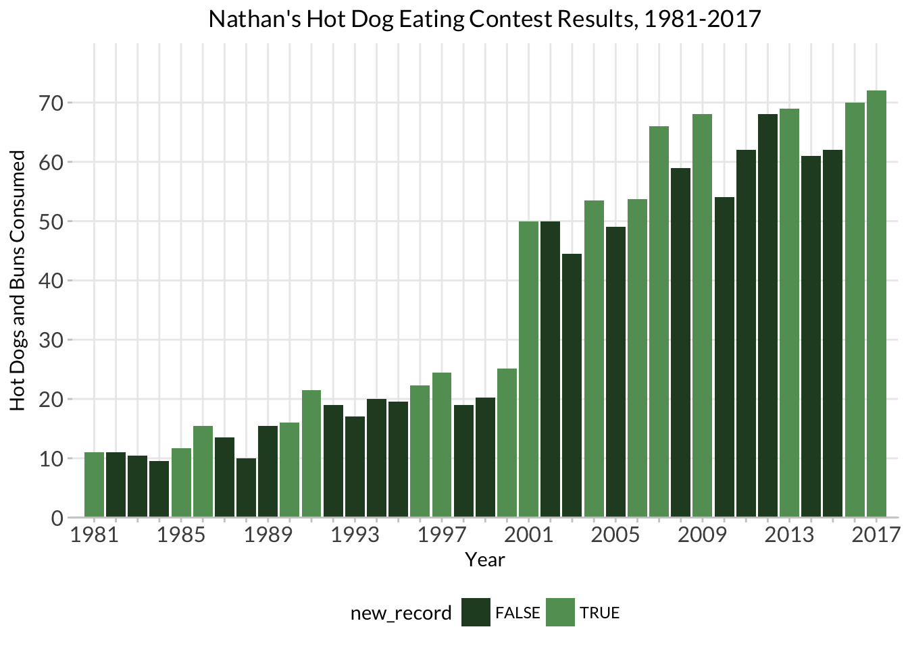
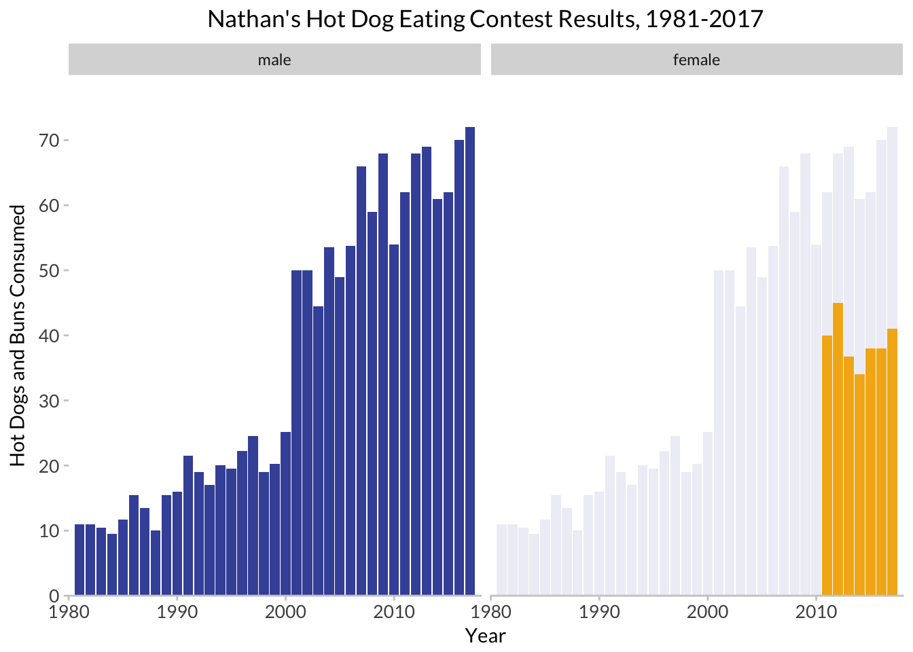

Lab 01: Addendum
CS631
Alison Hill
1 Packages
library(tidyverse)
library(extrafont)hot_dogs <- read_csv("http://bit.ly/cs631-hotdog",
col_types = cols(
gender = col_factor(levels = NULL)
))2 Visualizing new world records (for males)

Let’s adapt Nathan Yau’s hot dog contest example.
The first thing we notice is that we don’t have data about whether each year’s winner is a record or not. Since our data is nicely tidy, we can use dplyr window functions:
First, we use base R’s
cummaxto create a new variable that reflects the maximum HDB eaten cumulatively, that is, compared to all earlier years. For this reason, thearrange(year)here is critical.Next, we want to know if the
hdb_recordis actually a new record or not, compared to all previous years. We can usecase_whento create a logical variable that is TRUE if thehdb_recordfor a given year is greater than thehdb_recordfrom the year before (usingdplyr::lag). If not, this variable is FALSE.
hot_dogs_records <- hot_dogs %>%
filter(year >= 1980 & gender == 'male') %>%
arrange(year) %>%
mutate(hdb_record = cummax(num_eaten),
new_record = case_when(
hdb_record > lag(hdb_record) ~ TRUE,
TRUE ~ FALSE
)) %>%
filter(year >= 1981)We’ll also make our x-axis ticks again…
years_to_label <- seq(from = 1981, to = 2017, by = 4)
years_to_label [1] 1981 1985 1989 1993 1997 2001 2005 2009 2013 2017hd_years <- hot_dogs_records %>%
distinct(year) %>%
mutate(year_lab = ifelse(year %in% years_to_label, year, ""))hdb_records <- ggplot(hot_dogs_records,
aes(x = year, y = num_eaten)) +
geom_col(aes(fill = new_record)) +
labs(x = "Year", y = "Hot Dogs and Buns Consumed") +
ggtitle("Nathan's Hot Dog Eating Contest Results, 1981-2017") +
scale_fill_manual(values = c('#284a29', '#629d62')) +
scale_y_continuous(expand = c(0, 0),
breaks = seq(0, 70, 10)) +
scale_x_continuous(expand = c(0, 0),
breaks = hd_years$year,
labels = hd_years$year_lab) +
coord_cartesian(xlim = c(1980, 2018), ylim = c(0, 80)) +
theme_minimal() +
theme(plot.title = element_text(hjust = 0.5),
axis.text = element_text(size = 12),
panel.background = element_blank(),
axis.line.x = element_line(color = "gray92",
size = 0.5),
axis.ticks = element_line(color = "gray92",
size = 0.5),
text = element_text(family = "Lato"),
legend.position = "bottom",
panel.grid.minor = element_blank())
hdb_records
3 Visualizing background data
We’ll do this to highlight differences in gender.
https://drsimonj.svbtle.com/plotting-background-data-for-groups-with-ggplot2
hot_dogs_both <- hot_dogs %>%
filter(year >= 1981)
hot_dog_behind <- hot_dogs_both %>%
filter(gender == "male") %>%
select(-gender)hdb_facets <- ggplot(hot_dogs_both,
aes(x = year, y = num_eaten)) +
geom_col(data = hot_dog_behind, fill = '#4254a7', alpha = .1) +
geom_col(aes(fill = gender), show.legend = FALSE) +
facet_wrap(~gender) +
labs(x = "", y = "Hot Dogs and Buns Consumed") +
ggtitle("Nathan's Hot Dog Eating Contest Results, 1981-2017") +
scale_fill_manual(values = c('#4254a7', '#f4b31a')) +
scale_y_continuous(expand = c(0, 0),
breaks = seq(0, 70, 10)) +
scale_x_continuous(expand = c(0, 0),
breaks = seq(1981, 2017, 6)) +
coord_cartesian(xlim = c(1980, 2018), ylim = c(0, 80)) +
theme(axis.text = element_text(size = 10),
panel.background = element_blank(),
axis.line.x = element_line(color = "grey80",
size = 0.5),
axis.ticks = element_line(color = "grey80",
size = 0.5),
text = element_text(family = "Lato"),
legend.position = "bottom",
panel.grid.minor = element_blank(),
panel.spacing = unit(1, "lines"))
hdb_facets